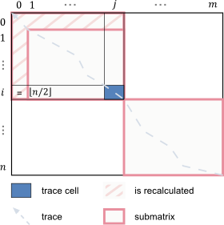
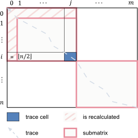

| Trace | ||
|---|---|---|
Daniel S. Hirschberg
introduced 1975 (submitted 1974) an approach to compute the longest common subsequence of two strings.
This approach can be adapted to compute the global alignment of two sequences
in quadratic time $O(nm)$ and only linear space, instead of quadratic space like in the original
Needleman-Wunsch (1970) algorithm.
While it offers the optimal alignment score without changing the runtime,
additional efforts are needed to traceback an according alignment, since
the needed data was not stored.
The idea is that the tracebacks you get from a prefix- and a suffix-alignment are congruent
i.e. the traceback-cells are the same.
Because of this, rows $i$ of the prefix dynamic programming matrix $D$
and the suffix matrix $D'$ (when using same coordinate system, see recursions)
can be added to identify the row's cell that is passed by an optimal traceback.
In detail, to enable traceback calculation in quadratic time a divide-and-conquer strategy is applied. Here, we want to identify where the traceback "passes through" the center row of the matrix (first divide-step on left picture).  To this end, first the middle row $i = \lfloor n/2 \rfloor$, where $n = |a|$ has to be computed for both matrices $D$ and $D'$. Given that $D_{i,j}$ holds the best prefix score up to and including $a_i,b_j$ and $D'_{i,j}$ provides the same for the suffixes starting in $a_{i+1},b_{j+1}$, the optimal overall alignment score can be found as the summation of some column $j$,
i.e. $\exists_{j} : D_{n,m} = D_{i,j}+D'_{i,j} = D'_{0,0}$. This position $j$ provides a decomposition of the traceback problem into the respective prefix and suffix strings for which the procedure is iterated until (a) one of the substrings is empty or (b) only $a_n$ or $b_j$ is left, respectively.
In the following, only the leftmost optimal traceback-cell per row is identified. Note, the introduced algorithm does not identify all traceback-cells. Missing horizontal traceback-steps (within a row) and vertical traceback-steps have to be identified in an additional postprocessing. In the following, we provide the series of the computed rows from the $D$ and $D'$ matrix (optionally along with the computation details) and the respective traceback subproblems, i.e. the according subsequences. For rows $i$, the identified traceback-cell $j$ is highlighted. Furthermore, we visualize all identified cells within a full matrix representation along with a final complete traceback path and alignment.
In detail, to enable traceback calculation in quadratic time a divide-and-conquer strategy is applied. Here, we want to identify where the traceback "passes through" the center row of the matrix (first divide-step on left picture).  To this end, first the middle row $i = \lfloor n/2 \rfloor$, where $n = |a|$ has to be computed for both matrices $D$ and $D'$. Given that $D_{i,j}$ holds the best prefix score up to and including $a_i,b_j$ and $D'_{i,j}$ provides the same for the suffixes starting in $a_{i+1},b_{j+1}$, the optimal overall alignment score can be found as the summation of some column $j$,
i.e. $\exists_{j} : D_{n,m} = D_{i,j}+D'_{i,j} = D'_{0,0}$. This position $j$ provides a decomposition of the traceback problem into the respective prefix and suffix strings for which the procedure is iterated until (a) one of the substrings is empty or (b) only $a_n$ or $b_j$ is left, respectively.
In the following, only the leftmost optimal traceback-cell per row is identified. Note, the introduced algorithm does not identify all traceback-cells. Missing horizontal traceback-steps (within a row) and vertical traceback-steps have to be identified in an additional postprocessing. In the following, we provide the series of the computed rows from the $D$ and $D'$ matrix (optionally along with the computation details) and the respective traceback subproblems, i.e. the according subsequences. For rows $i$, the identified traceback-cell $j$ is highlighted. Furthermore, we visualize all identified cells within a full matrix representation along with a final complete traceback path and alignment.

Input:
Match
Mismatch
Gap $\gamma$
Hint:
For distance minimization, match scores should be smaller than all other scores.
For distance minimization, match scores should be smaller than all other scores.